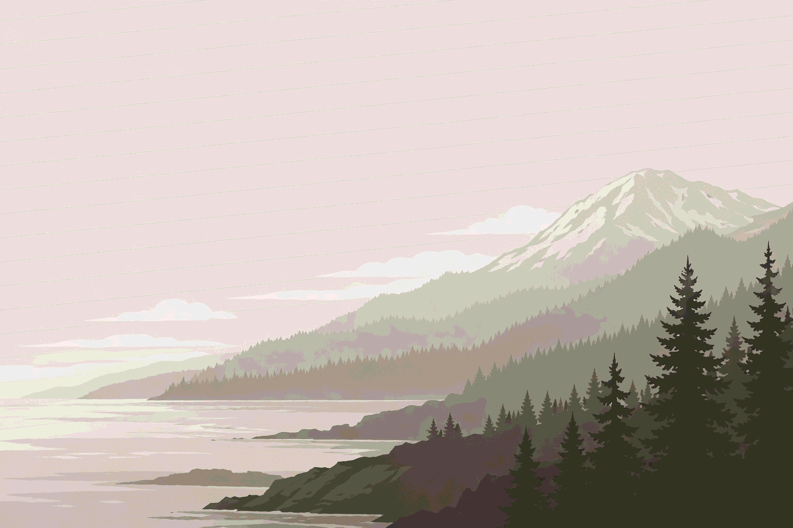

That means earthquakes, wildfires, flooding, and winter storms aren't hypothetical. They're the place you chose. This is how you get ready — calmly, specifically, and honestly.

It's about care. You prepare because you have people to protect, a place worth defending, a life you want to keep. Every emergency kit is an act of imagination — a story about a future that hasn't happened yet, told by someone who decided to take it seriously.
Most preparedness resources are either frightening or boring. Government brochures with all the warmth of a DMV waiting room. Survivalist forums that assume you want to live in a bunker. I built this site because I wanted something that treated me like an adult — honest about the risks, specific to where I live, and genuinely useful. Clear guidance from your neighbors in the Cascadia bioregion, based on real geology, real weather, and real experience.
The Cascadia bioregion — from northern California through Washington and Oregon to coastal British Columbia — has its own risks, shaped by the Cascadia Subduction Zone, the Cascade Range, and a climate that swings between drought summers and wet, heavy winters. These four guides cover the threats most likely to affect your household.
"In 2016 I read an article in The New Yorker called 'The Really Big One.' I had a young family. The feeling of being helpless in the aftermath of an earthquake unsettled me enough to do something about it. So I built my own family-sized emergency kit — not because I'm an expert, but because I'm a parent who didn't want to be caught unprepared. This site is what I learned, shared for anyone willing to make the effort."
— Michael, in Washington State. Read more about why this exists.
You need a trip to the hardware store, a Saturday afternoon, and a clear list. I'll walk you through it.
Build your kit